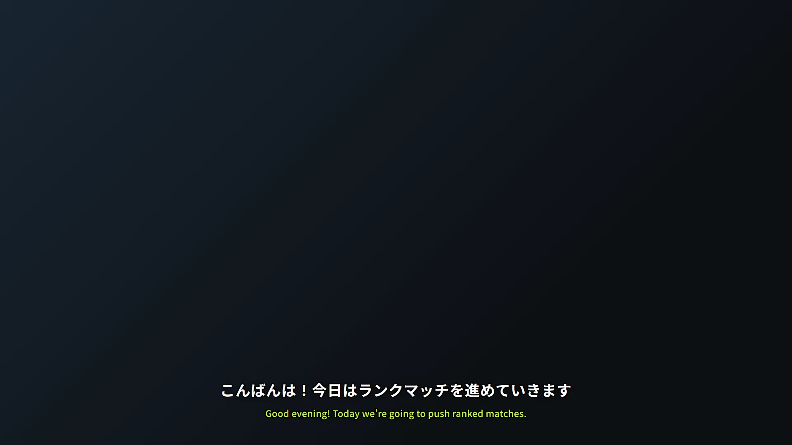
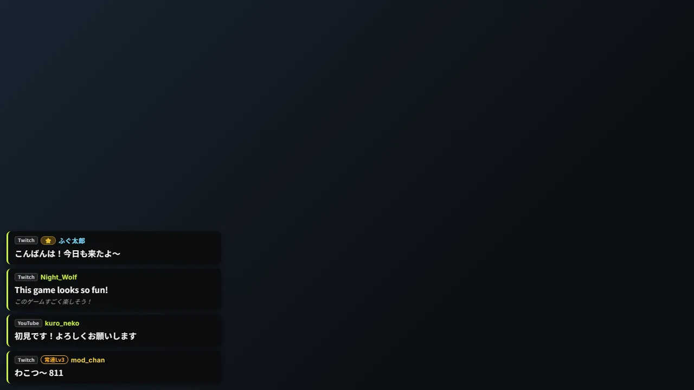
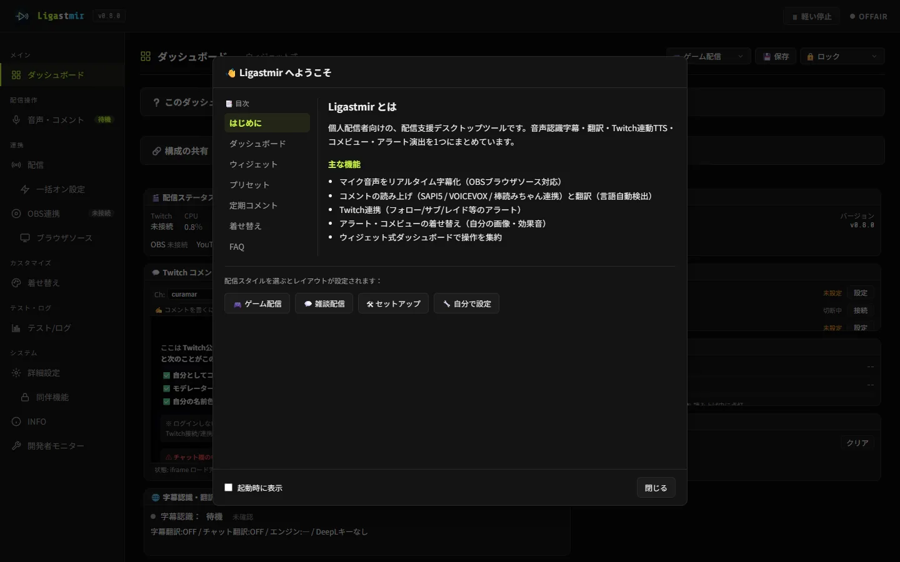
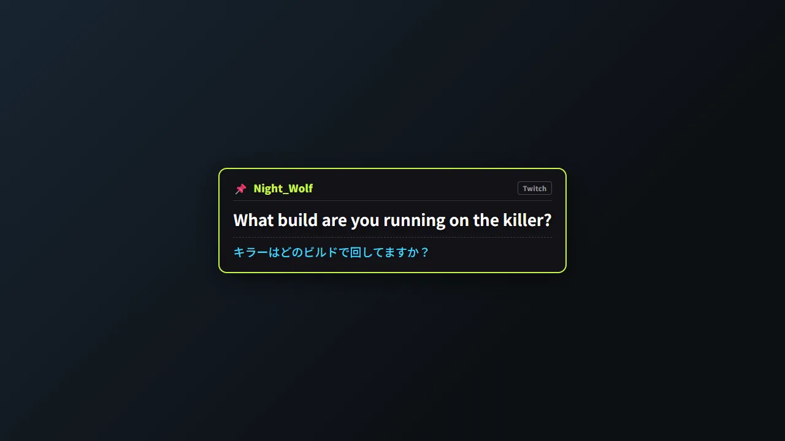
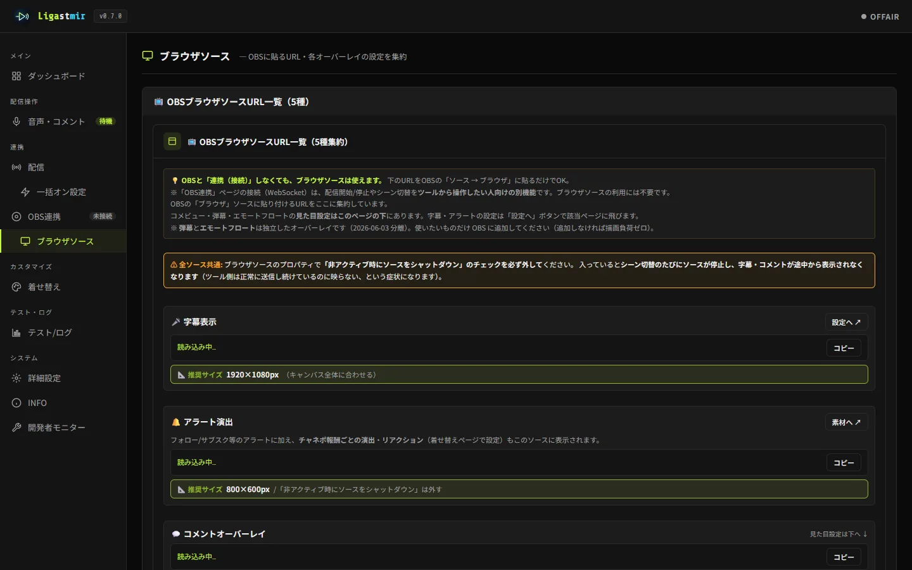

PRODUCT
PRODUCT
Ligastmir
リガストミール ／ 配信支援デスクトップツール
配信中の「あったらいいな」を、ひとつにまとめたツールです。 コメントの読み上げ・字幕の翻訳・コメビュー・OBS連携を、 軽くて、解凍してすぐ使えて、必要な機能だけ選んで使えます。 Twitch / YouTube 対応・無料。
最新版 v0.8.0 ・ 2026-07-15 更新
PRODUCT
配信中の「あったらいいな」を、ひとつにまとめたツールです。 コメントの読み上げ・字幕の翻訳・コメビュー・OBS連携を、 軽くて、解凍してすぐ使えて、必要な機能だけ選んで使えます。 Twitch / YouTube 対応・無料。
最新版 v0.8.0 ・ 2026-07-15 更新
機能の一覧より先に——こんな「困った」に心当たりがあれば、Ligastmir はきっと役に立ちます。
ひとつでも当てはまったら、3分ではじめる からどうぞ。全部盛りにする必要はありません——使いたい機能だけ ON にすれば、それで完成です。
アイドル時 CPU 2〜3%・メモリ 130MB 程度。重量級ゲームの配信と一緒に動かしても邪魔をしません。
インストール作業なし。解凍して 起動.bat をダブルクリックするだけ。設定はアプリと同じフォルダに保存されます。
「字幕だけ」「読み上げだけ」も正解。各機能は独立して動くので、使いたいものだけ ON にできます。
専門用語にはその場で一行の説明。配信ツールに慣れていない人でも、ガイドを読みながら一つずつ設定できます。
Twitch・YouTube のコメントに対応。片方だけでも、両方つないでもOK。チャットを繋がず字幕だけ使うのも可。
外部サービスへの接続は、あなたがボタンを押すまで動きません。視聴者の名前を勝手に送ったりもしません。
OBS が得意なこと（録画・画面合成・配信）はOBSに任せ、Ligastmir はOBSが苦手なところと配信中に手元から触れた方が楽なところを補います。
話した内容をリアルタイムに字幕化して OBS に表示。フォント（5種）・表示位置・サイズ・表示時間まで細かく調整でき、翻訳字幕は別の位置にも置けます。
日本語字幕の下に英訳を表示。海外視聴者のコメントを日本語にも。無料エンジン標準・DeepLキーがあれば高品質。
コメントを音声合成で読み上げ。VOICEVOX（ずんだもん等）・Windows標準・棒読みちゃんに対応。読み上げ辞書やNGワードも。
チャットを画面に表示。弾幕や、スタンプ・リアクションがふわっと浮かぶエモートフロート演出も。
フォロー・サブスク・レイド・チャンネルポイント交換で画面に演出。報酬ごとに画像・音を割り当てられます。
WebSocket で接続して、ダッシュボードからシーン切替・配信開始/停止。OBSウィンドウに戻らず手元で操作。
コメント数に応じた進化バッジや、チャンネルポイント報酬ごとの演出で、視聴者との時間を彩ります。
配信前チェック・定期コメント・一括スタート・イベント発火テストを一画面に。「今どの機能が動いているか」「ONにしたのに前提が足りず動いていない箇所」も見える化。
配信中に困ったら、全ページのヘッダから「軽い停止」で読み上げ・翻訳・演出をワンボタン停止（コメント表示は続く）。外部接続の一括切断や、負荷を下げる軽量モードも。
うまく動かない時は総合診断が主要機能を実際に確認し、日本語で「原因かも／試すこと」を提示。最小構成で立ち上げ直すセーフモード起動や、配信前のマイクチェックも。
読み上げ辞書（用語や名前の読み）やダッシュボードの構成を、配信者どうしでファイル共有。視聴者名やパスワードは含めない安全設計です。
気になったコメントを検索して、選んだ1件を OBS に質問カードとして大きく表示。原文＋翻訳を併記し、配信終了で自動的に消えます。
各機能の詳しい設定方法は 使い方ガイド に、導入前のよくある質問は FAQ にまとめています。
実際の画面です（v0.8.0）。多機能ですが、使う機能だけONにすればいいので、見た目ほど難しくありません。







やりたいこと別の設定手順ページです。手順・実画面・つまずき対処をひとまとめにしています。
マイクを選んでON → URLを貼るだけ。色・位置・フォント・翻訳字幕も。
Windows標準・VOICEVOX・棒読みちゃん。辞書やNGワードも。
日本語2段表示＋日本語読み上げ。言語は自動検出。
コメビューをブラウザソースで。常連バッジ・着せ替えも。
キーワード・スタンプ・イベントで画像/音/絵文字。連打対策も。
コメント取得・読み上げ・翻訳・タイトル/サムネ変更。
接続チェック・一括スタート・演出テストを1画面に。
「Ligastmir（リガストミール）」は、3つの言葉を重ねた造語です。配信のコメントと配信者をつなぎ、配信に乗せて、視聴者に届ける——そんな役割を名前にしました。
起動.bat をダブルクリック。初回は SmartScreen が出ることがありますが「詳細情報 → 実行」で進めます。最短の手順だけ知りたい方は 🔰 3分ではじめる、画面つきの詳しい手順は 使い方ガイド へ。
動作環境：Windows 10 / 11（Windows 11 推奨）・本体無料。VOICEVOX で読み上げる場合のみ VOICEVOX 本体（無料）が別途必要です。
個人開発のツールだからこそ、安心材料は先に見えるところへ。要点だけまとめておきます。
詳しくは プライバシーポリシー・本物の確認 へ。
Ligastmir はまだ育っている途中です。これから作りたいものと、開発に関わってくれる方の入口です。
サイトから最新版を無料でダウンロードできます。導入・更新の手順はダウンロードページに、質問は Discord でどうぞ。
感想や不具合報告は大歓迎——軽く触ってみた一言だけでも、開発の力になります。